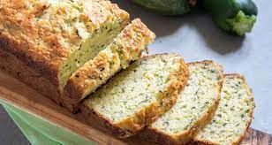

Bolo salgado de abobrinha

Ingredientes
- 375 g de abobrinha italiana (curgete) ralada
- 3 ovos
- Suco de 1/2 limão
- 125 ml de óleo ou azeite
- 370 g de farinha de triho
- 20 g de fermento químico
- 8 g de sal
Modo de preparo
- Misturar a abobrinha ralada com os ovos, o limão e o azeite.
- Acrescentar a farinha, o fermento e o sal, misturando bem.
- Despejar em uma fôrma untada e enfarinhada e levar para assar a 200º C por 40 a 50 minutos.
Observações
pode-se substituir a abobrinha por cenoura ou beterraba.
Receita da Cambury.